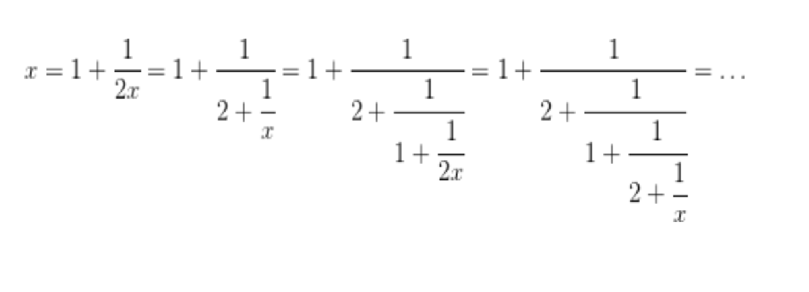

Explicación
Las aproximaciones numéricas son muy importantes en muchos problemas de matemáticas, ya que en gran cantidad de ocasiones no podemos disponer del valor exacto de ciertos datos, ya sea porque el cálculo de dicho valor exacto es demasiado laborioso o porque ni siquiera es posible (por ejemplo, en la práctica no podemos aspirar a disponer del valor exacto de Π). Además en la mayoría de los casos necesitamos la mejor aproximación posible, ya que el hecho de utilizar una no muy buena aproximación puede hacer que el error cometido en nuestros cálculos crezca hasta niveles demasiado altos, inadmisibles en ciertos casos.
Se llama número cuadrático irracional a todo número real que es solución de una ecuación de segundo grado y que no es un número racional (es decir, la raíz cuadrada que aparece en su expresión no es exacta). La fracción continua de este tipo de números posee la curiosa característica de ser periódica. Es decir, de un punto en adelante, sus coeficientes tiene un período que se repiten indefinidamente. De hecho, este resultado es un si y sólo si, ya que toda fracción continua periódica corresponde con un número cuadrático irracional. Vamos a ver cómo calcular dicha fracción continua con un ejemplo: √3
√3 esta entre 1 y 2, por lo que a0= 1 y y su fraccion tendra la forma:√3 = 1 + (1/x)(1)
De aqui, √3 - 1 = 1/x ; por lo que x = 1/ √3 - 1. Multiplicando arriba y abajo por la √3 + 1 llegamos a que x= (√3 + 1)/2
En esta misma expresión sustituimos √3 por su valor de (1), llegando a x= 1+1/2x
Y ahora en esta expresión obtenida sustituimos x por ese valor al que hemos llegando de forma indefinida, obteniendo los siguiente resultado parciales:
